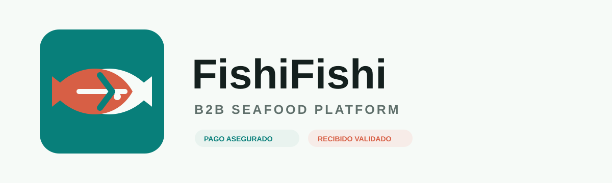
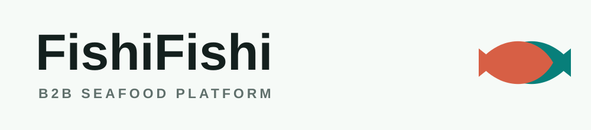

FishiFishi - propuesta de logotipo
Primera direccion visual para una plataforma B2B de pescados y mariscos con foco en pago asegurado, trazabilidad y confirmacion de recibido.


Primera direccion visual para una plataforma B2B de pescados y mariscos con foco en pago asegurado, trazabilidad y confirmacion de recibido.

